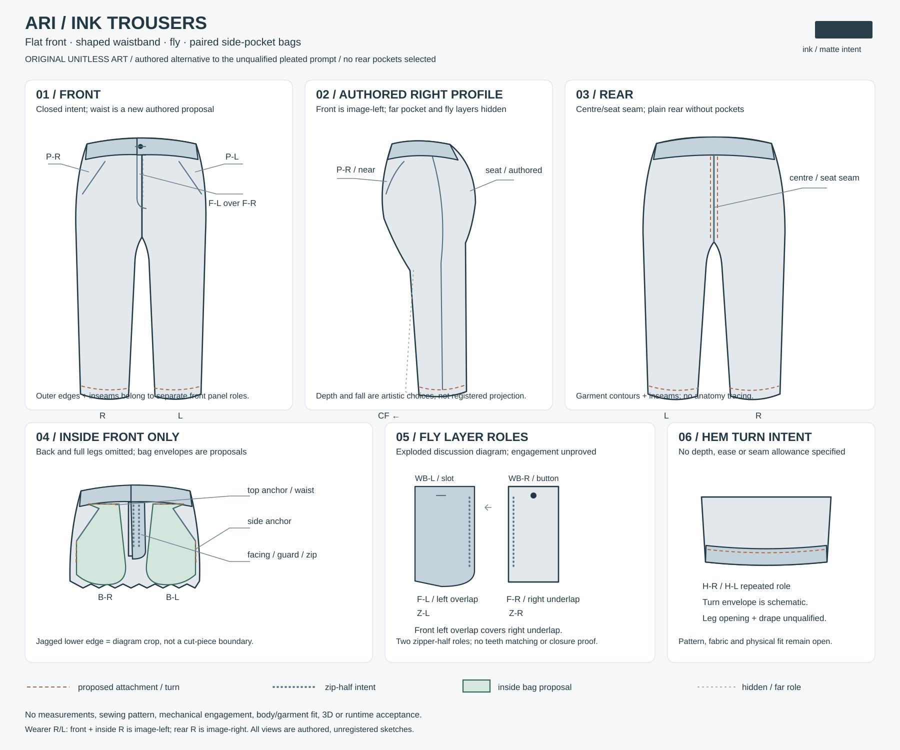

Ari / unqualified trouser source
Stopped before first image. No render attempted; appearance and readability are unqualified. Exact receipt · Held artist notes
Authored waistband, fly and paired inside bags clarify the concealed waist of the retained Ari concept. This unitless technical art proposes a flat front; pleats and rear pockets are not selected. Pattern, dimensions, sewing, closure mechanics, body/garment fit, 3D and runtime remain open.
Editable SVG · Complete role/tree JSON · Brief · Original Ari
